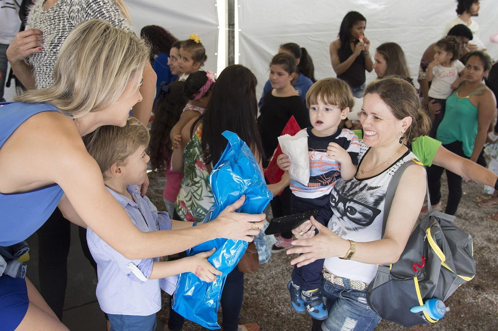
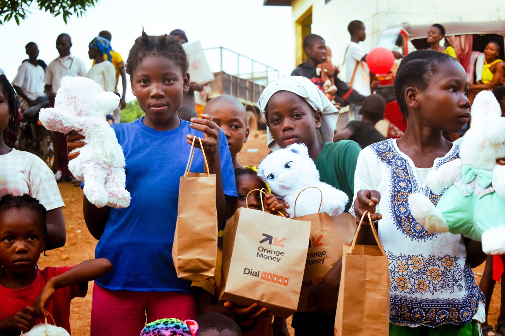
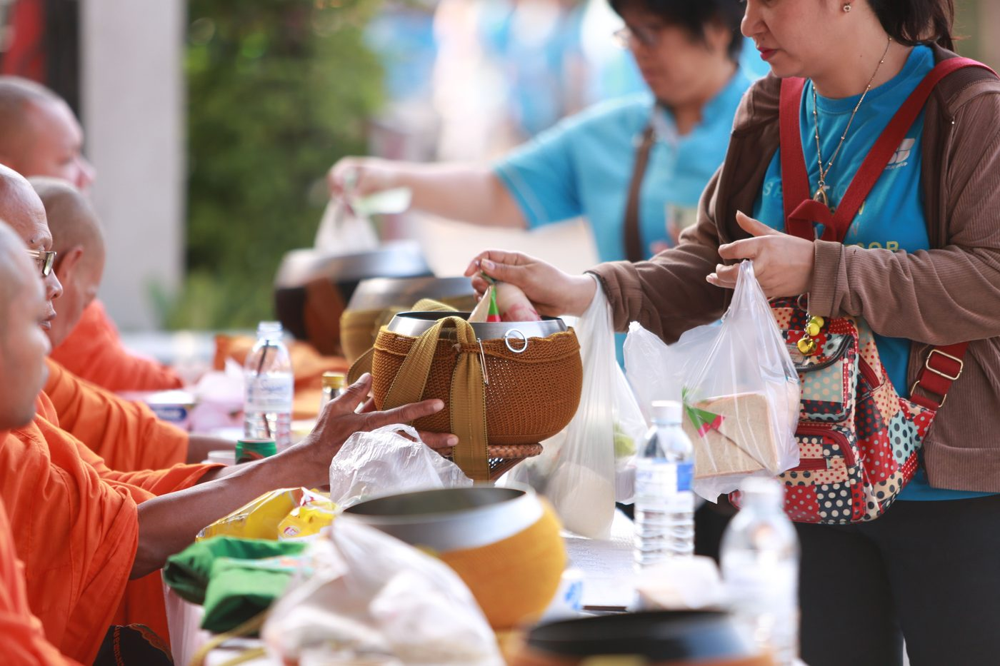
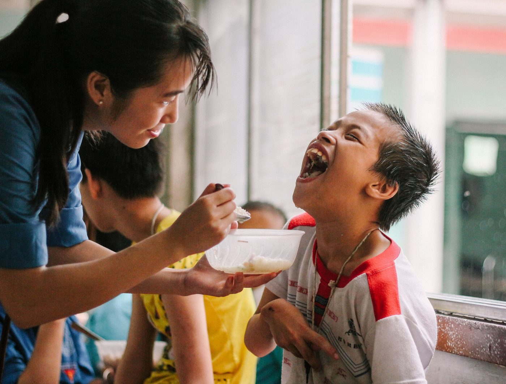
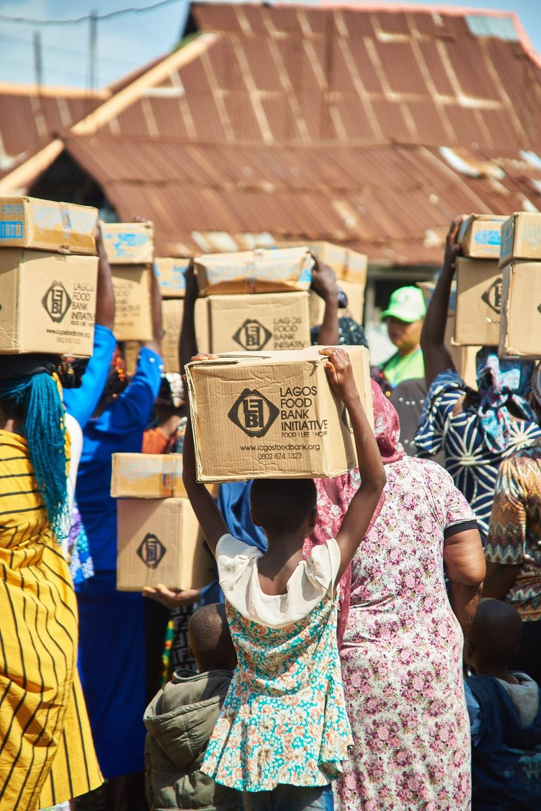

Healthcare Outreach
Mobile clinics and trained community health workers bring checkups, maternal care, and vaccines to villages with no nearby hospital.
Explore programEst. 2010 · Registered 501(c)(3) Nonprofit
We partner with underserved communities to expand access to healthcare, education, and the everyday tools of self‑reliance — because every family deserves the chance to build a better future.

Who We Are
Eleanor Hope Foundation was founded on a simple belief: lasting change happens when communities have the tools to lead their own progress. For over a decade, we've worked shoulder‑to‑shoulder with local leaders, clinics, and schools to close the gaps that hold families back.
We don't parachute in with pre‑built solutions. Every program starts with listening — then grows into clean water systems, staffed clinics, funded classrooms, and roads that connect people to opportunity.
Learn more about our storyTo equip vulnerable communities with the healthcare, education, and infrastructure they need to thrive — on their own terms.
Every program is designed with, not for, the people it serves.
Local leaders set priorities; we provide resources and expertise.
Every dollar is tracked and reported back to our donors, publicly.
We measure success in years of self‑sufficiency, not one‑time gifts.
Where We Work
Three pillars guide everything we build alongside the communities we serve.
Mobile clinics and trained community health workers bring checkups, maternal care, and vaccines to villages with no nearby hospital.
Explore programScholarships, school supplies, and teacher training keep children in classrooms and open doors to secondary and vocational education.
Explore programClean water systems, solar power, and roadwork built with local labor create the backbone communities need to grow independently.
Explore programImpact in Action
A glimpse at the outreach events, volunteer teams, and communities behind the numbers above. Tap any photo to see it full size.

Field Relief
Donation Drive
Child Care
Food Distribution